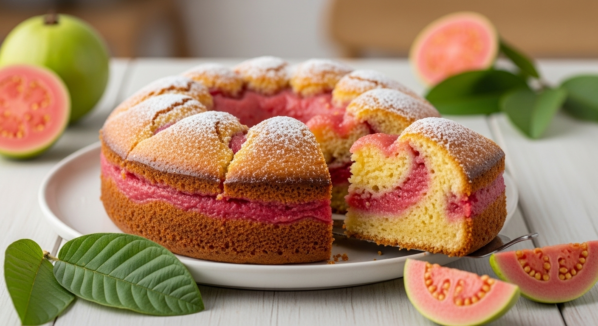

Doces · Tortas e bolos
Bolo gelado de goiaba

Ingredientes
- Sorvete: 3 gemas, 1 xícara de açúcar, 1 xícara de leite morno, 500 ml de suco de goiaba, ½ xícara de chantilly
- Rocambole: 4 gemas, ½ xícara de açúcar, 4 claras em neve, ⅔ xícara de farinha, sal, manteiga, farinha, 400 g de doce de goiaba em pasta
Modo de preparo
- Prepare o sorvete: bata gemas com açúcar, junte leite morno, suco e chantilly. Congele 1 h, bata e congele novamente.
- Rocambole: bata gemas com açúcar; misture farinha e claras. Divida em duas assadeiras forradas; asse ~10 min.
- Espalhe goiaba, enrole. Corte em fatias finas e refrigere 1 h.
- Forre tigela semi-esférica com fatias de rocambole; encha com sorvete, cubra com mais fatias e congele.
Observação
Pode usar sorvete industrializado. Congelamento: filme plástico. Descongelamento: geladeira; decore com chantilly.